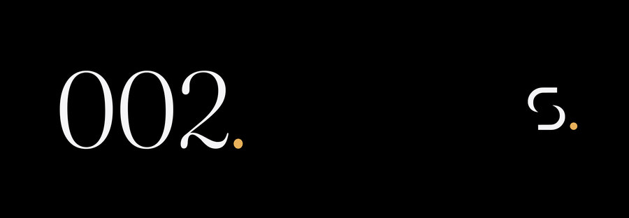
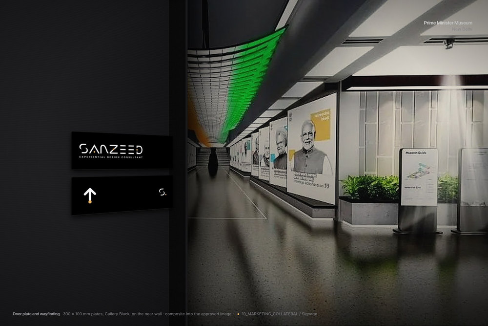
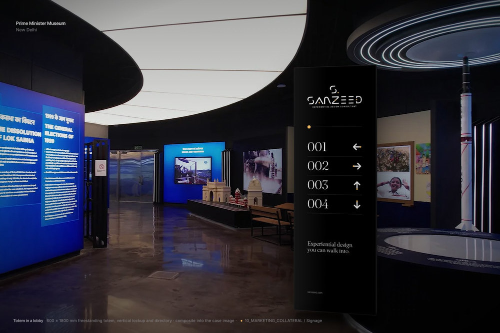
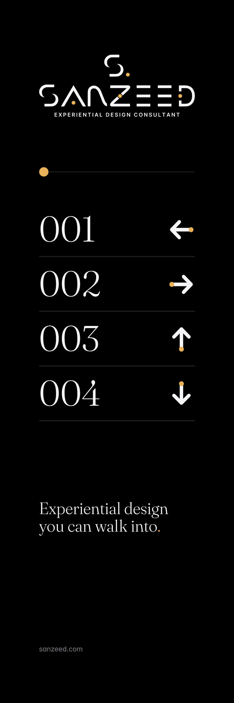
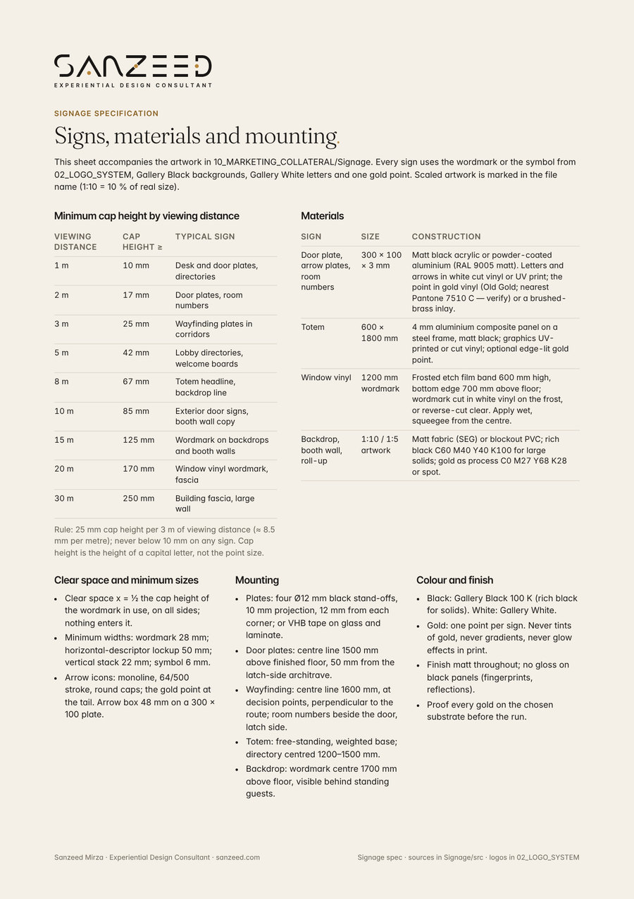

Chapter22
Signage & environmental.
Every sign is Gallery Black with Gallery White letters and one gold point. Cap height ≥ 25 mm per 3 m of viewing distance; matt throughout; the artwork at 1:10 with its scale in the file name.
- 22.1Door plate, wayfinding, totem
- 22.2Window vinyl and the specification sheet
Sanzeed Mirza · Experiential Design ConsultantBrand Guidelines · Version 1.0 · November 2026
22.1 · Door plate, wayfinding, totem
White letters, one point, matt black.
Plates 300×100 mm (files carry 3 mm bleed), the eight-plate wayfinding set, and the totem. Each sign: HTML → PDF → outlined SVG for the sign-maker → PNG preview → print-ready CMYK PDF.








22.2 · Window vinyl and the specification sheet
Twenty-five millimetres per three metres.
Minimum cap height by viewing distance, materials, mounting heights and finishes, from the signage spec sheet. Cap height is the height of a capital letter, not the point size; never below 10 mm.
| Viewing distance | Cap height ≥ | Typical sign |
|---|---|---|
| 1 m | 10 mm | desk and door plates, directories |
| 2 m | 17 mm | door plates, room numbers |
| 3 m | 25 mm | wayfinding plates in corridors |
| 5 m | 42 mm | lobby directories, welcome boards |
| 8 m | 67 mm | totem headline, backdrop line |
| 10 m | 85 mm | exterior door signs, booth-wall copy |
| 15 m | 125 mm | wordmark on backdrops and booth walls |
| 20 m | 170 mm | window-vinyl wordmark, fascia |
| 30 m | 250 mm | building fascia, large wall |
- Plates
- Matt black acrylic or powder-coated aluminium (RAL 9005 matt), 3 mm; letters and arrows in white cut vinyl or UV print; the point in gold vinyl (Old Gold, nearest Pantone 7510 C — verify) or a brushed-brass inlay
- Totem
- 4 mm aluminium composite panel on a steel frame, matt black; UV print or cut vinyl; optional edge-lit gold point
- Window vinyl
- Frosted etch-film band 600 mm high, bottom edge 700 mm above floor; wordmark 1200 mm cut in white vinyl on the frost (cut file at 1:1 from the white wordmark SVG)
- Large format
- Matt fabric (SEG) or blockout PVC; rich black C60 M40 Y40 K100; gold as process C0 M27 Y68 K28 or spot
- Mounting
- Plates on four Ø12 mm black stand-offs, 10 mm projection; door plates centre line 1500 mm above finished floor, 50 mm from the latch-side architrave; wayfinding at 1600 mm at decision points; totem directory 1200–1500 mm; backdrop wordmark centre 1700 mm
- Finish
- Matt throughout; no gloss on black panels; never tints of gold, gradients or glow effects in print; proof every gold on the substrate

